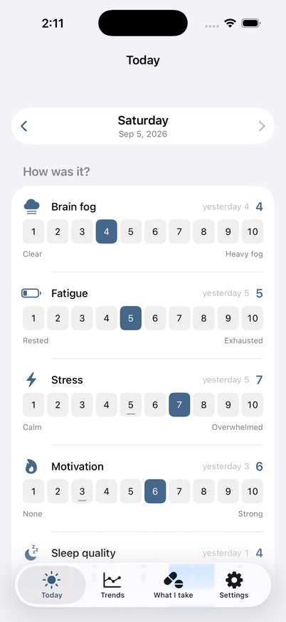
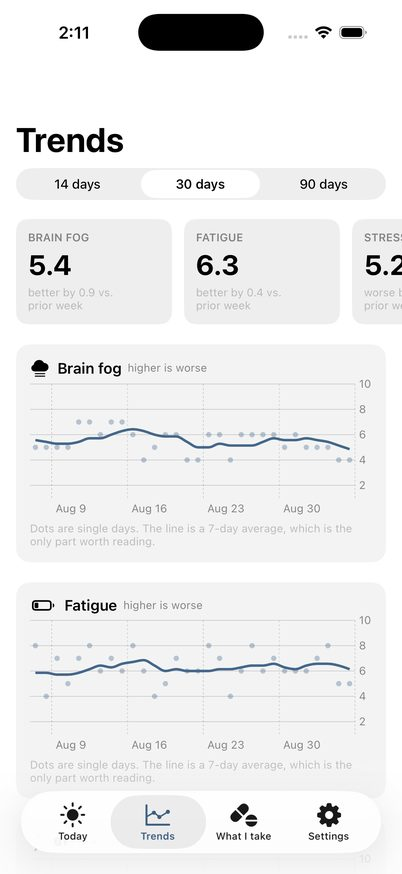
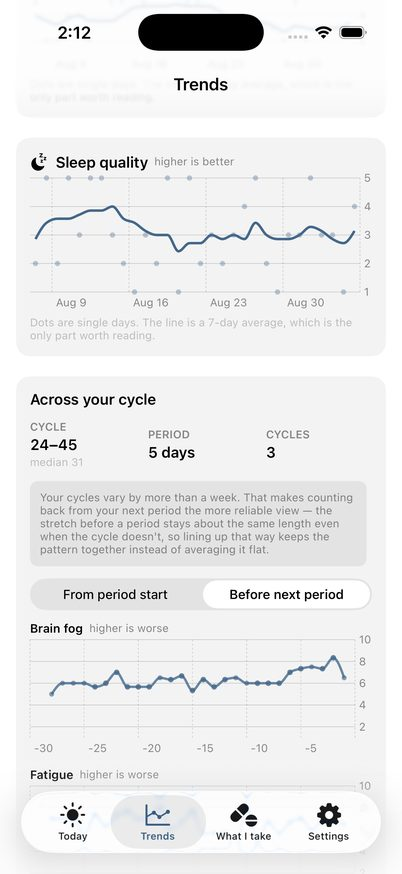

The question it exists to answer
You started a supplement, a prescription, or a whole regimen at once. Weeks later, the honest question is whether it's doing anything — and memory is a poor witness, especially on the days you most need an answer.
Fog Log keeps the record instead. One check-in a day, under a minute. Then it shows you what your own ratings did before and after each thing you started.



It cannot share your data, because there is nowhere for it to go
Try this: turn on airplane mode. The app works exactly the same.
There is no account, no sign-in, and no networking code anywhere in it. Not disabled — absent. Your log lives in one place, on your phone, and the developer has no way to see it even in principle.
That is a structural fact rather than a promise. Several well-known health apps have been penalised by the US Federal Trade Commission for sending users' health data to advertisers. Fog Log is built so that the same mistake is not available to it.
What it never does
- No account, no sign-in, no email address collected
- No analytics, telemetry, or crash reporting
- No advertising, and no advertising identifiers
- No third-party code of any kind
- No access to contacts, photos, location, or Apple Health
What it does
Everything you take, on whatever schedule it actually follows
Prescriptions, over-the-counter medicines, supplements, or things that aren't pills at all. Every day, certain weekdays, every few days, or as needed — several doses a day, with as many reminders as you want. Mark a dose skipped on purpose and it records a decision, not a lapse.
Air pressure, without a weather service
Your iPhone has a barometer in it. Fog Log reads that sensor when you check in and charts pressure alongside your symptoms. No weather lookup, no location — the instrument is already in your pocket.
Your cycle, including when it isn't regular
Mark the days you're bleeding and the app works out the rest. Most cycle tracking quietly assumes a tidy 28 days; if yours run 24 one month and 45 the next, lining every cycle up from day one averages a real pattern into a flat line. Fog Log can count backward from your next period instead, which keeps the pattern intact — and it switches to that view on its own when your cycles vary.
Something to hand a doctor
One tap produces a short PDF written to be read in the few minutes an appointment allows: the trends, everything you were taking with its dose and dates, and the days you left notes. The full spreadsheet comes with it.
What it refuses to do
Fog Log won't suggest what to take, recommend a dose, or warn about interactions. It records what you tell it. Nothing in it is medical advice and it does not replace a clinician — if something about your health concerns you, talk to a doctor.
It also makes no predictions about your cycle. No fertility window, no ovulation estimate. Just your own ratings, arranged by day.
Free
No subscription, no limit on how much you track, no cap on how far back your history goes, and nothing held back behind a purchase.